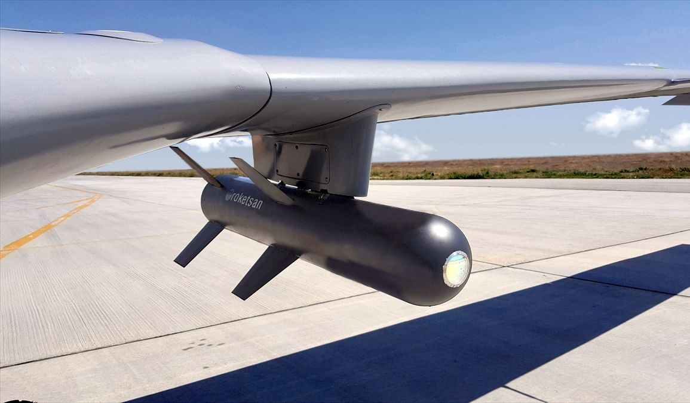
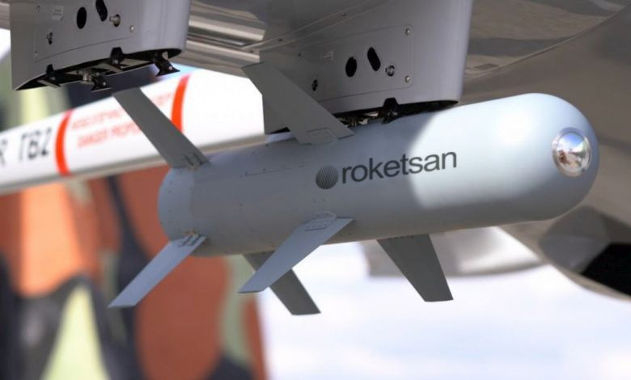
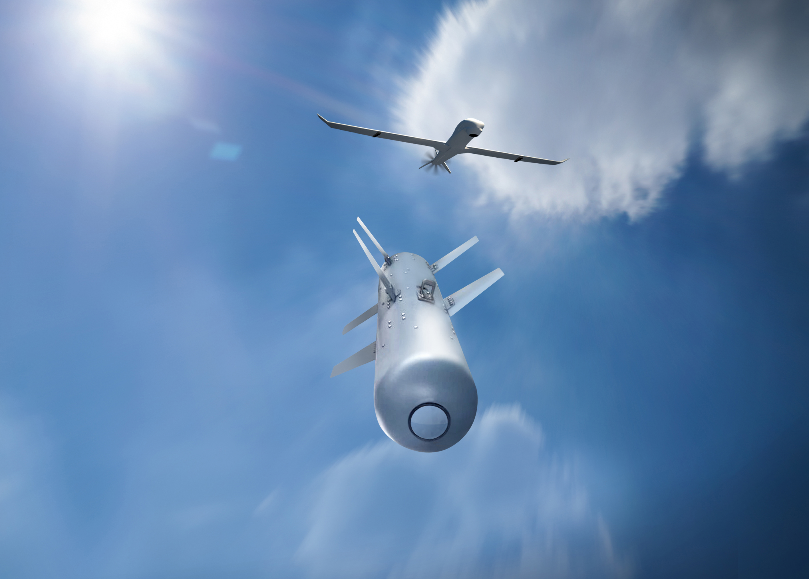

Mini Akıllı Mühimmat
MAM-L, düşük ağırlığı sayesinde özellikle insansız hava araçları ve hafif taarruz uçakları için geliştirilen, yarı aktif lazer güdümlü mini akıllı mühimmattır. Küçük boyutuna rağmen sabit ve hareketli hedeflere karşı yüksek vuruş hassasiyeti sağlayarak, hafif hava platformlarına ciddi bir hassas taarruz yeteneği kazandırır.
Sistem yalnızca kara hedeflerine değil, resmî katalogta belirtildiği üzere deniz veya kara hedeflerine karşı havadan yere süzülmeli kullanım için de uygundur. Bu da MAM-L’yi sadece klasik hava-yer mühimmatı değil, aynı zamanda çok görevli hafif saldırı mühimmatı haline getirir.
MAM-L’nin en önemli avantajlarından biri, farklı harekât şartlarına göre değiştirilebilen harp başlığı seçenekleri ve opsiyonel yaklaşma sensörü / GPS konfigürasyonudur. Böylece aynı temel mühimmat ailesi, farklı hedef setlerine ve görev profillerine göre uyarlanabilir.
ROKETSAN’ın resmî tanımında bu mühimmat, düşük ağırlık ile yüksek hassasiyeti birleştiren ve çoklu atım özelliği sunan bir çözüm olarak geçer. Bu da özellikle SİHA’larda birden fazla mühimmat taşımayı ve farklı hedeflere ardışık angajmanı kolaylaştırır.
15 km
0.95–1 m
160 mm
22 kg
Lazer Arayıcı Başlık
AP / HE-FRAG / Termobarik
| Sistem Tipi | Mini akıllı mühimmat / yarı aktif lazer güdümlü hafif hava-yer mühimmatı |
| Adı | MAM-L |
| Üretici | ROKETSAN |
| Görev Alanı | Havadan yere, kara veya deniz hedeflerine karşı hassas angajman |
| Menzil | 15 km |
| Uzunluk | 0.95 m (ürün kataloğu) / 1 m (ürün sayfası yuvarlatılmış değer) |
| Çap | 160 mm |
| Ağırlık | 22 kg |
| Arayıcı Başlık | Lazer arayıcı başlık / semi-active laser seeker |
| Güdüm | Yarı aktif lazer güdüm |
| Harp Başlığı Seçenekleri | Zırh delici, yüksek infilaklı parçacık etkili, termobarik |
| Opsiyonel Konfigürasyon | Yaklaşma sensörlü / GPS konfigürasyonu |
| Çoklu Atım | Multi-shot feature |
| Koordinata Atış Yeteneği | Opsiyonel GPS konfigürasyonu ile istenen koordinata atış |
| Platformlar | İHA, TİHA, hafif taarruz uçakları, sabit kanatlı hava platformları |
| Öne Çıkan Özellik | Düşük ağırlıkla 15 km sınıfında hassas vuruş sağlayan, farklı başlık seçenekli yerli mini mühimmat çözümü |
| Yüksek Hassasiyet | Lazer güdüm sayesinde sabit ve hareketli hedeflere yüksek isabet |
| Süzülmeli Kullanım | Havadan yere süzülmeli angajman konsepti |
| Kara ve Deniz Hedeflerine Angajman | Resmî katalogta belirtilen kara veya deniz hedeflerine karşı kullanım |
| Çoklu Atım | Aynı platformdan birden fazla mühimmatın ardışık kullanımına uygun yapı |
| Yaklaşma Sensörü Seçeneği | İstenilen irtifada aktivasyon kabiliyeti sağlayan opsiyonel yapı |
| Koordinata Atış | GPS konfigürasyonu ile belirli koordinata yönelim |
| Düşük Ağırlık Avantajı | SİHA ve hafif hava platformlarında daha fazla mühimmat taşıma imkânı |
| Görev Esnekliği | Farklı harp başlığı seçenekleri ile görev tipine göre uyarlanabilir kullanım |
| Ana Muharebe Tankları | Zırh delici başlıkla ağır zırhlı hedefler |
| Hafif Zırhlı Araçlar | Koruması daha düşük kara hedefleri |
| Anti-Personel Hedefler | Açık alandaki personel hedefleri |
| Kapalı / Yarı Kapalı Alan Hedefleri | Termobarik başlıkla uygun hedef setleri |
| Sabit Hedefler | İşaretlenmiş sabit kara veya yüzey hedefleri |
| Hareketli Hedefler | Lazer işaretleme ile takip edilen hareketli hedefler |
| Deniz Hedefleri | Katalogta belirtilen deniz hedeflerine karşı kullanım |
| İHA / SİHA | MAM-L’in temel kullanım platformlarından biri |
| TİHA | Daha ağır ve uzun havada kalışlı insansız platformlarda kullanım |
| Hafif Taarruz Uçakları | Hafif hava-yer görevleri için uygun platform sınıfı |
| Sabit Kanatlı Hava Platformları | Katalogta açıkça belirtilen kullanım alanı |
| Kullanım Konsepti | Düşük ağırlıklı, çok amaçlı, hassas hava-yer mühimmatı |
| Aile İçindeki Yeri | MAM-C’ye göre daha büyük ve daha uzun menzilli; MAM-T’ye göre daha hafif çözüm |
| Taktik Avantaj | Küçük/orta hava platformlarına uzun menzilli hassas taarruz yeteneği kazandırması |


